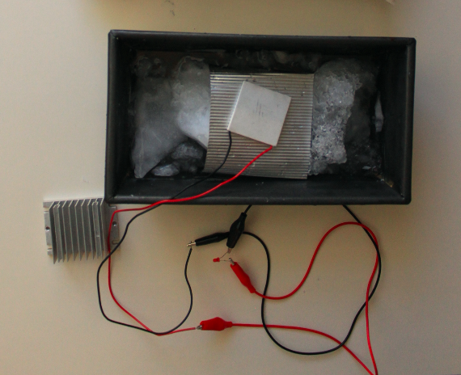
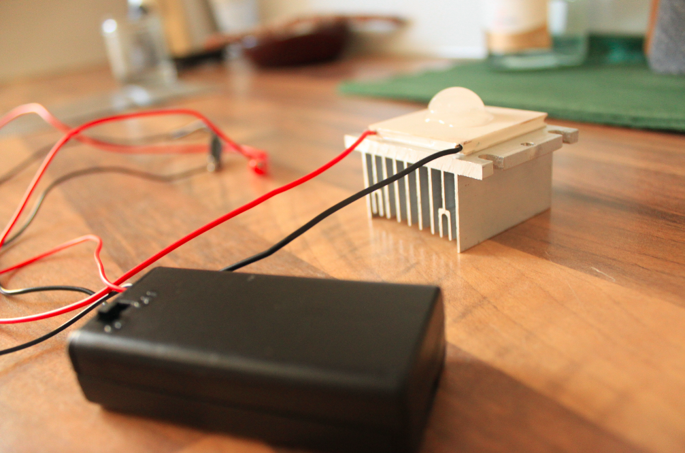

I am prototyping a wearable device and looking into possibilities to convert the heat generated by screaming in a pillow into electricity. I spent the last months familiarizing with the concept of energy harvesting and ran two experiments using a Peltier module as a thermoelectric generator (TEG) and thermoelectric cooler (TEC).*
The purpose of these experiments was to test the thermoelectric cell design for portability and on-body application, and assess how much heat-cold differential needs to occur for the module to produce thermoelectricity. The experiments were carried out at room temperature of approximately 25 °C. Below images and videos from my favourite accidents.
Experiment I: testing the Seebeck Effect, discovered in 1821 by Thomas Johann Seebeck
In thermoelectric generators, the Seebeck Effect takes a temperature difference and turns it into electricity. For this experiment I used a TEC1-12706 module (40mm x 40mm, operating at 12V, 6A), aluminum heatsink (40 x 40 x 20mm), 1.8V LED/diode, DIY power pot in aluminum filled with water at temperature below 0 °C, and aluminum paper. The aluminum heatsink was brought to a temperature of approximately 60 °C.
Experiment II: testing the Peltier Effect, discovered in 1834 by Jean-Charles-Athanase Peltier
Applying a voltage to the module creates a temperature difference between the two sides (the top gets hot, and the side in contact with the aluminum heatsink gets cold).
I used a TEC1-12706 module (40mm x 40mm, operating at 12V, 6A), aluminum heatsink (40 x 40 x 20mm), 3V battery. Once the electricity power was turned on, the warm side of the module reached approximately 40 °C. The small ice cube placed on the warm side of the module melted in approximately thirty seconds.
* Difference between a thermoelectric cooler (TEC) module &
a thermoelectric generator (TEG) module: both types of module use the thermoelectric effect. This effect is reversible
so that both module types can act as a cooler or a generator; if a voltage is applied to a module, it will pump heat, but if a temperature difference is applied
across a module a voltage will be produced. For the experiments above I used a TEC module as a cooler and a generator; however, experts still recommend that cooler modules (TEC)
are used for cooling and generator modules (TEG) are used for generating electricity. This is because the cooler and generator modules have been optimised for
different temperature ranges, with cooler modules most effective at temperatures closer to room temperature, as usually found in cooler applications,
while generator modules are optimised for higher temperatures. Read more.
References: Anna Katarzyna Dąbrowska, Monika Kobus, B. Pekoslawski, Łukasz Starzak. 2021 Applied Sciences. Retrieved June 7 from
researchgate.net
Igor Burmistrov, Nikolay Gorshkov, Nikolay Kiselev, Denis Artyukhov, Evgeny Kolesnikov, Bekzod Khaidarov, Andrey Yudni, Gopalu Karunakaran, Eun-Bum Cho, Denis Kuznetsov,
Alexander Gorokhovsky. 2020. High seebeck coefficient thermo-electrochemical cell using nickel hollow microspheres electrodes.
Renewable Energy Volume 157, September 2020, Pages 1-8 Retrieved June 8 from sciencedirect.com
Jennifer Chu. 2018 MIT. Retrieved June 19 from
news.mit.edu/2018
Ravi Anant Kishore, Amin Nozariasbmarz, Bed Poudel, Mohan Sanghadasa & Shashank Priya. 2019 Nature. Retrieved from
nature.com